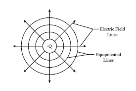
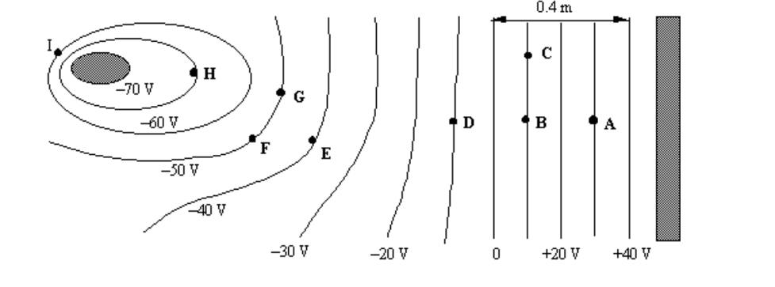

Equipotential surfaces are surfaces where the electric potential is constant at every point. They provide a powerful way to visualize electric fields and understand the relationship between electric potential and electric field.
What are Equipotential Surfaces?
Definition
An equipotential surface is a surface where the electric potential V has the same value at every point. Moving a charge along an equipotential surface requires no work.
Equipotential surfaces are like contour lines on a topographic map, but for electric potential instead of elevation. They help us visualize how electric potential changes in space.

Equipotential surfaces around a positive point charge (concentric spheres).
Key Properties of Equipotential Surfaces
Fundamental Properties
Perpendicular to field lines: Electric field lines are always perpendicular to equipotential surfaces
No work required: Moving a charge along an equipotential surface requires no work (W = qΔV = 0)
Never cross: Equipotential surfaces never intersect each other
Density indicates field strength: Closer equipotential surfaces indicate stronger electric fields
Direction of field: Electric field points from high potential to low potential
Common Equipotential Surface Patterns
Point Charge
For a single point charge, equipotential surfaces are concentric spheres:
$$V = k\frac{q}{r} = \text{constant}$$
This means r = constant, which describes a sphere centered on the charge.
Two Equal Point Charges
For two equal point charges, equipotential surfaces have a figure-8 shape in 2D, with the midpoint being a saddle point.
Parallel Plates
For parallel charged plates, equipotential surfaces are parallel planes between the plates, with equal spacing indicating uniform electric field.
Dipole
For an electric dipole (equal and opposite charges), equipotential surfaces are more complex, with a zero-potential surface passing through the midpoint.
Visually:

Points F and G have the same potential because they are on an equipotential line at -50 V. Also, C and B have the same potential because they are at the same equipotential line at 10 V
Relationship to Electric Field
Simple Relationship
The electric field always points from high potential to low potential, and is perpendicular to equipotential surfaces.
In simple cases (like between parallel plates or along a line):
$$E = -\frac{\Delta V}{\Delta x}$$
This means the electric field strength is the rate at which the potential changes with distance. The negative sign shows that the field points in the direction of decreasing potential.
This relationship tells us:
Field direction: Electric field lines point from high to low potential
Field strength: Stronger fields correspond to closer equipotential surfaces
Uniform field: Equally spaced equipotential surfaces indicate uniform electric field
Zero field: Widely spaced equipotential surfaces indicate weak electric field
Worked Examples
Example 1: Equipotential Surfaces for a Point Charge
Problem: A point charge of +2.0 μC creates electric potential values of 1.0 × 10⁴ V, 5.0 × 10³ V, and 2.5 × 10³ V. What are the radii of these equipotential surfaces?
Answer: The electric field magnitude is 500 V/m, pointing from the 100 V surface toward the 90 V surface.
Visualizing Equipotential Surfaces
2D Representation
In two dimensions, equipotential surfaces become equipotential lines. These are often drawn as dashed lines to distinguish them from electric field lines.
3D Representation
In three dimensions, equipotential surfaces are actual surfaces. For simple cases like point charges, these are spheres.
Computer Visualization
Modern software can create detailed 3D visualizations of equipotential surfaces for complex charge distributions.
Confusing field lines and equipotential lines: Field lines are solid, equipotential lines are dashed
Thinking equipotential surfaces can cross: They never intersect
Forgetting the perpendicular relationship: Field lines are always perpendicular to equipotential surfaces
Ignoring the work relationship: No work is done moving along equipotential surfaces
Practice Problems
Practice Problem 1
Problem: A point charge creates equipotential surfaces at distances of 1.0 m, 2.0 m, and 4.0 m. What are the potential values at these surfaces if the charge is +3.0 μC?
Click for solution
Solution:
Formula: \(V = k\frac{q}{r}\)
For r = 1.0 m: \(V_1 = (8.99 \times 10^9) \frac{3.0 \times 10^{-6}}{1.0} = 2.7 \times 10^4 \text{ V}\)
For r = 2.0 m: \(V_2 = (8.99 \times 10^9) \frac{3.0 \times 10^{-6}}{2.0} = 1.35 \times 10^4 \text{ V}\)
For r = 4.0 m: \(V_3 = (8.99 \times 10^9) \frac{3.0 \times 10^{-6}}{4.0} = 6.7 \times 10^3 \text{ V}\)
Answer: 2.7 × 10⁴ V, 1.35 × 10⁴ V, and 6.7 × 10³ V respectively
Practice Problem 2
Problem: Two parallel plates are separated by 5.0 cm and have a potential difference of 100 V. How many equipotential surfaces (including the plates) would you expect between them if they are equally spaced?